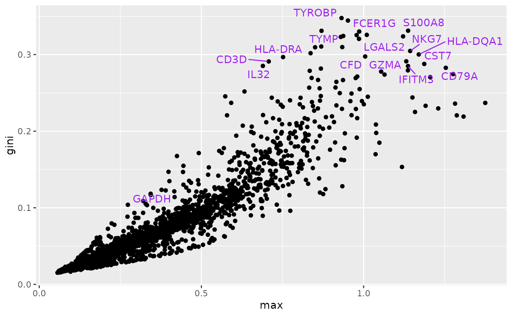

obtain the simba max metric for genes
max_scores(sce, N = 50)SingleCellExperiment with simba scores available
number of cells with highest scores to average
data(nn50)
data(t3k)
t3k = add_simba_scores(nn50, t3k)
gi = gini(t(assay(altExps(t3k)$sprobs)))
ma = as.numeric(max_scores(t3k))
plot(ma, gi)
mydf = data.frame(max=as.numeric(ma), gini=gi, gene=rowData(t3k)$Symbol)
litd = mydf[order(mydf$gini,decreasing=TRUE),][1:25,]
hh = mydf[mydf$gene=="GAPDH",]
litd = rbind(litd, hh)
mm = ggplot(mydf, aes(x=max, y=gini, text=gene)) + geom_point()
mm + ggrepel::geom_text_repel(data=litd,
aes(x=max, y=gini, label=gene), colour="purple")
#> Warning: ggrepel: 5 unlabeled data points (too many overlaps). Consider increasing max.overlaps
